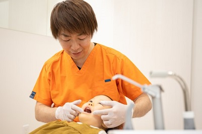
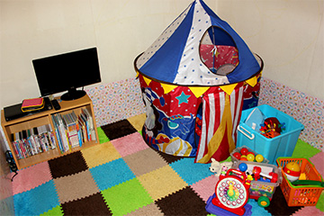
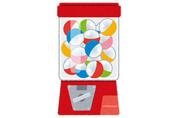
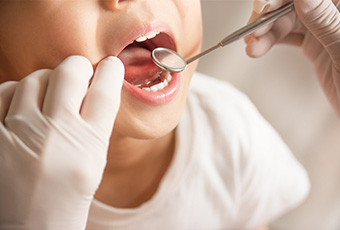

- ホーム
- 小児歯科
天王寺まつい総合歯科の小児歯科治療
当院の小児歯科の考え方
小児歯科では、お子さまが初めて出会う歯医者で怖い経験をしてしまうと、歯医者が嫌いになってしまい、それ以降、トラウマとして残ることも珍しくありません。そこで当院では、「歯科治療はそんなに大変なことではない」ということ、「歯科医院が楽しい場所」であると思ってもらえるよう、さまざまな取り組みを行っております。
まずは歯医者に慣れてもらう
歯科医院は、誰にとっても非日常的な空間です。診療台や特殊な器具、消毒薬の臭い、そしてはじめて見る歯医者の先生など、お子さまにとっては不安に感じるものばかりで構成されています。
そこでまずは、医院の雰囲気、そして先生、スタッフ達に慣れてもらうことに専念します。診療台に座る練習をしたり、治療に使用する器具を触ったりするなど、お子さまがリラックスできるように努めます。
また、お子さまとのコミュニケーションをしっかりとることで、信頼関係を構築します。そうして歯科医院に慣れてもらい、お子さまが自発的にお口を開けてくれるようになって初めて、歯科治療を開始します。
痛みへの配慮

歯科治療では、いろいろな場面で痛みを伴います。これもまた、歯医者嫌いになる原因のひとつです。当院ではそんな歯科治療に伴う痛みを最小限に抑えるために、以下のようなステップを踏んで麻酔を行い、治療をしております。
- ステップ1 表面麻酔
-
麻酔注射を刺す部分に、あらかじめ表面の麻酔をかけます。注射時の針の痛みを抑えるためです。ジェルタイプの麻酔薬を塗布するだけなので、痛みを伴うことなく、歯茎の感覚を麻痺させることができます。必要に応じて、より強力な表面の麻酔効果が期待できるシールタイプ（ペンネス）を使用します。
- ステップ2 極細の麻酔針の使用
-
麻酔注射に使用する針は、細ければ細いほど痛みを抑えることができます。そこで当院では、今現在販売されている注射針の中で、最も細い「33G」を使用しております。
- ステップ3 麻酔薬を温める
-
特に寒い冬では体温と麻酔薬との温度差で痛みを感じやすくなる為、注入前からあらかじめ温めた薬を使用します。
- ステップ4 電動麻酔器の活用
- 麻酔薬を急激に注入すると、組織への負担が大きくなり、痛みが生じる原因となります。そこで当院では、電動麻酔器を活用することで、麻酔薬の注入速度を一定に保つよう心がけております。
以上のような理由から当院では比較的麻酔はゆっくりで、より時間をかけて行います。
当院の小児歯科の特徴
天王寺まつい総合歯科には、キッズスペースが完備されております。また、治療後にはご褒美を用意しておりますので、毎回の治療を楽しみにしているお子さまもたくさんいらっしゃいます。
-

キッズスペース
キッズスペースには、絵本やおもちゃなど、お子さまが楽しい時間を過ごせるような遊具が揃っております。
治療前に楽しく遊んで、リラックスした状態のまま治療を受けていただきます。
-

治療後のご褒美
歯科治療の最初の頃はお子さまにとって、とても大変な体験です。それだけに、頑張ったあとにはたくさん褒めてあげるようにしてください。
当院でも、治療後のご褒美を用意しております。通院当初は、ご褒美のために、毎回の治療を頑張るお子さまもいらっしゃいます。
〜乳歯の役割〜
乳歯の役割には下記のような役割があります。
- 永久歯及び永久歯が生えるための骨の成長促進
- 柔らかい乳歯が自然に削れやすいことにより、まだ未熟な顎の関節への負担を軽減

乳歯には生え変わるからと言っても、子供の成長にとって大切な役割がありますから大事にしないといけません。
また、近年では永久歯の少ない子どもも増えており、その場合は生え変わることなく乳歯のまま残ることとなり、それは口全体にとってさまざまなトラブルへとつながります。
虫歯や歯肉炎などのトラブルがなくとも歯科医院に定期的に受診しチェックすることは非常に大切と言えます。